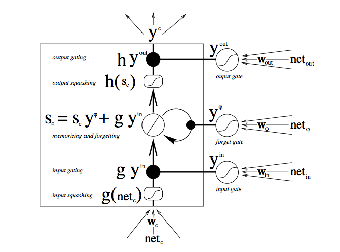

Recurrent Neural Networks
1 Recurrent Neural Networks
Promising solution to tackling the problem of learning sequences of info. RNNs dont have to be organized in layers and directed cycles are allowed. Neurons are allowed to be connected to themselves. "Backprojections": connections leading from the output units back to the hidden units. They have a "memory" which captures info about what has been calculated so far.

- Recurrent nets are a type of artificial neural network designed to recognize patterns in sequences of data, such as text, genomes, handwriting, the spoken word, or numerical times series data emanating from sensors, stock markets and government agencies.
- They are arguably the most powerful and useful type of neural network, applicable even to images, which can be decomposed into a series of patches and treated as a sequence.
- That sequential information is preserved in the recurrent network’s hidden state, which manages to span many time steps as it cascades forward to affect the processing of each new example. It is finding correlations between events separated by many moments, and these correlations are called “long-term dependencies”, because an event downstream in time depends upon, and is a function of, one or more events that came before.
- The hidden state at time step t is ht. It is a function of the input at the same time step xt, modified by a weight matrix W (like the one we used for feedforward nets) added to the hidden state of the previous time step ht-1 multiplied by its own hidden-state-to-hidden-state matrix U, otherwise known as a transition matrix and similar to a Markov chain.
- The sum of the weight input and hidden state is squashed by the function φ – either a logistic sigmoid function or tanh, depending – which is a standard tool for condensing very large or very small values into a logistic space, as well as making gradients workable for backpropagation.
- Because this feedback loop occurs at every time step in the series, each hidden state contains traces not only of the previous hidden state, but also of all those that preceded ht-1 for as long as memory can persist.
- All recurrent neural networks have the form of a chain of repeating modules of neural network. In standard RNNs, this repeating module will have a very simple structure, such as a single tanh layer.

1.1 backpropagation through time (BPTT)
The problem with using backpropagation here is that we have cyclical dependencies. In feed forward nets,we calculated error with respect to the weights in one layer, we could express them in terms of the error derivatives from the layer above. Recurrent networks rely on an extension of backpropagation called backpropagation through time, or BPTT. Time, in this case, is simply expressed by a well-defined, ordered series of calculations linking one time step to the next, which is all backpropagation needs to work.
take RNNs inputs, outputs, and hidden units and replicate it for every time step, corresponding to layers in our new ffnn. If the original RNN has a connection of w from neuron i to j, in our ffnn, we draw a connection of w from neuron i in every layer tk to neuron j in evey layer tk+1.
To determine the initializations for the hidden states at time 0, we can treat the initial activities as parameters fed into the feed forward network at the lowest layer and backpropagate to determine their optimal values as well!
1.1.1 Unrolling
Write out the network for the complete sequence. If the sequence is a sentence of 5 words, the network would be unrolled into a 5-layer neural network, one layer for each word Convert our RNN into a new structure that's essentially a feed-forward neural network!

1.1.2 Truncated BPTT
Truncated BPTT is an approximation of full BPTT that is preferred for long sequences, since full BPTT’s forward/backward cost per parameter update becomes very high over many time steps. The downside is that the gradient can only flow back so far due to that truncation, so the network can’t learn dependencies that are as long as in full BPTT.
1.2 Vanishing (and Exploding) Gradients
Recurrent nets seeking to establish connections between a final output and events many time steps before were hobbled, because it is very difficult to know how much importance to accord to remote inputs. This is partially because the information flowing through neural nets passes through many stages of multiplication.
Everyone who has studied compound interest knows that any quantity multiplied frequently by an amount slightly greater than one can become immeasurably large (indeed, that simple mathematical truth underpins network effects and inevitable social inequalities). But its inverse, multiplying by a quantity less than one, is also true. Gamblers go bankrupt fast when they win just 97 cents on every dollar they put in the slots.
Because the layers and time steps of deep neural networks relate to each other through multiplication, derivatives are susceptible to vanishing or exploding.
Below you see the effects of applying a sigmoid function over and over again. The data is flattened until, for large stretches, it has no detectable slope. This is analogous to a gradient vanishing as it passes through many layers.

1.3 Long short-term memory units (LSTMs)
LSTMs preserve the error backpropagated through time and layers. they allow recurrent nets to continue to learn over many time steps (over 1000), opening channel to link causes and effects remotely.
Contain info outside of normal flow in a gated cell. The cell makes decisions about what to store, when to allow reads, writes erasures, via gates that open and close.
The gates are analog: element-wise multiplication by sigmoids. Differentiable, suitable for backpropagation.
The gates act on signals received blocking or passing info based on its strength and import, filter with their own sets of weights. Ws are adjusted in the learning.

- The triple arrows: where info flows into the cell. The combination of present input and past cell state is fed to the cell and to the gates, to decide how the input will be handled.
- The black dots are the gates: decide to let new input in, erase present state, and/or let that state impact the network's output at present time step.

The central plus sign in both diags is the secret of LSTMs. Helps preserve a constant error when it must be backpropagated at depth. Instead of determining the subsequent cell state by multiplying its current state with new input, they add the two.
Different weights filter the input for input, output and forgetting. Forget gate is a linear identity function. If open, the current state is simply multiplied by one. Including bias of 1 to forget gate of every LSTM cell is shown to improve performance
RNNs can map one input to many outputs(one image to many words), many to many(translation), or many to one(classifying a voice).
You may also wonder what the precise value is of input gates that protect a memory cell from new data coming in, and output gates that prevent it from affecting certain outputs of the RNN. You can think of LSTMs as allowing a neural network to operate on different scales of time at once.


Each line carries a vector, from output of a node to inputs of others. The pink circle are pointwise operations(vec additions, etc), yellow boxes are learned neural net layers. Lines merging: concatenation, while forking: content being copied and going to diff locations.
1.3.1 Core idea behind LSTMs
The key: cell state, the line running at the top of the diagram. The LSTM has the ability to remove or add info to the cell state, by structures called gates. Gates are composed out of sigmoid neural net layer and a pointwise multiplication operation.


1.3.2 LSTM step-by-step
- Decide what info to throw away from cell state. Forget gate layer. Looks at ht-1 and xt, outputs num between 0 and 1 for each num in cell state Ct-1. For ex: when we see a new subject, we want to forget the gender of the old subject, to select correct pronouns.

- Decide what info to store in cell state.
- Input gate layer: sigmoid decides which values update
- a tanh layer creates vec of new candidate values, Ct, that could be added.
- Combine the two to create update to state.

- Update old state to new cell state Ct. Multiply old state by ft, forgetting. Then add it*Ct. This is the new candidate values, scaled by how much decided to update each val.

- Decide what to output. Based on filtered cell state. Sigmoid layer to decide what part to output. then put cell state through tanh (vals between -1 and 1) and multiply by the output of sigmoid gate.

1.3.3 Variants of LSTMs
Findings show that they're all about the same. Some worked better on certain tasks.
- Adding "peephole connections"
We let gate layers look at the cell state.

- Use coupled forget and input gates.
Only forget when we're going to input something in its place. We only input new vals to the state when we forget something older.

- Gated Recurrent Units (GRUs)
LSTMs without output gate, fully writes the contents from its memory cell to the larger net at each time step. Combines forget and input gate into single "update gate". Also merges the cell state and hidden state.
Simpler than standard LSTM, growing increasingly popular.

1.3.4 Caracter-Level Language Models
we’ll give the RNN a huge chunk of text and ask it to model the probability distribution of the next character in the sequence given a sequence of previous characters. This will then allow us to generate new text one character at a time.
As a working example, suppose we only had a vocabulary of four possible letters “helo”, and wanted to train an RNN on the training sequence “hello”. This training sequence is in fact a source of 4 separate training examples: 1. The probability of “e” should be likely given the context of “h”, 2. “l” should be likely in the context of “he”, 3. “l” should also be likely given the context of “hel”, and finally 4. “o” should be likely given the context of “hell”.
encode each character into a vector using 1-of-k encoding, and feed them into the RNN one at a time. We will then observe a sequence of 4-dimensional output vectors (one dimension per character), we interpret as the confidence the RNN currently assigns to each character coming next in the sequence.